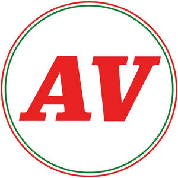

Trade Mark Journal No.2025/047 21 November 2025
UK00004291163 7 November 2025 (16,18,21,24,25,29,30,32,33,35,43)

International priority date claimed: 5 November 2025
(Italy)
(302025000171433)
- Class 16
- Stickers [decalcomanias]; Postcards and picture postcards; Posters made of paper; Decoration and art materials and media; Works of art and figurines of paper and cardboard, and architects' models; Printed matter, stationery and educational supplies; Calendars; Planners and diaries; Printed matter; Magazines [periodicals]; Trade journals; Books; Illustrated books; Mounted posters; Note books; Note pads; Writing or drawing books; Stickers [stationery]; Printed visuals; Photographic reproductions; Photographic prints; Photographs [printed]; Booklets; Albums; Paper folders; Arts, crafts and modelling equipment; Paper book markers; Printed publications; Printed tickets; Postage stamps; Envelopes [stationery]; Stationery; Printed stationery; Cases for stationery; Pencils; Pens; Penholders; Pencil holders; Pencil boxes; Brush pens; Display binders; Drawing brushes; Chalks for colouring; Art prints; Artists' materials; Printed guides; Graphic prints; Printed periodicals; Leaflets; Art pictures; Educational and instructional material; Cardboard boxes; Adhesives for stationery or household purposes; Office requisites, except furniture; Drawing instruments.
- Class 18
- Saddlery, whips and apparel for animals; Walking staffs; Umbrellas and parasols; Luggage, bags, wallets and other carriers; Luggage; Luggage tags [leatherware]; Luggage tags; Carry-on bags; Collars for animals; Leads for animals; Clothing for pets; Suitcases; Attaché cases; Pocket wallets; Card cases [notecases]; Card wallets [leatherware]; Small purses; Leather purses; Purses; Business card cases; Boxes made of leather; Leather and imitations of leather; Bags; Handbags; All-purpose carrying bags; Waterproof bags; Handbags; Beach bags; Briefcases [leather goods]; Garment carriers; Canvas bags; Shoulder bags; Shoe bags; Travel baggage; Bags for sports; Roller bags; Cross-body bags; Grocery tote bags; Textile shopping bags; Haversacks; Haversacks for sports; Beach Haversacks; Reusable shopping bags; Key cases; Bumbags; School knapsacks; Vanity cases, not fitted; Rucksacks; Daypacks; Casual Bags; Canvas shopping bags; Canvas duffel bags.
- Class 21
- Mugs; thermic mugs; cup carriers; mugs made of plastic; water bottles; thermal bottles [thermos]; thermos for beverages; bottles; bottle openers; drinking glasses, goblets and barware; glasses; coffee mugs; glass for drinking wine; ornamental sculptures made of porcelain, pottery, earthenware or glass; crockery, pots and vessels; cooking pots and pans [non-electric]; pot stands; bakeware [not toys]; household containers; kitchen containers; storage tins; kitchen tins; kitchen utensils; griddles [non-electric cooking utensils]; household or kitchen utensils; vases; coasters not of paper or textile; coasters (tableware); table plates; saucers; coffee cups; works of art and decoration including sculptures made primarily of ceramics or glass or substitutes thereof; cosmetic, hygiene and beauty care utensils; household utensils for cleaning, brushes and brush-making materials; Corkscrews; decanters; drip rings that fit over the tops of wine bottles to prevent dripping.
- Class 24
- Towels of textile; Beach towels; Kitchen towels; Towels [textile] for kitchen use; Towels [textile] for kitchen use; Kitchen linen; Table covers and tablecloths; tablecloths; tablecloths, not of paper; place mats, not of paper; textile place mats; Textile tablecloths; Table napkins of textile; Table napkins of textile; Bed covers; Bed linen and blankets; Throws and plaids; Throws; Bathroom linen; Bed clothes and blankets; tableware linens; Sheets [textile]; Pillowcases; Covers for cushions; Bed throws; Quilt covers; Towels made of textile fibers; Bed covers; Cotton blankets.
- Class 25
- Clothing; Shorts; Belts [clothing]; Kerchiefs [clothing]; Casualwear; Sportswear; Underwear; Waterproof clothing; Clothing for men, women and children; Infant wear; Hats; Baseball caps; Headgear; Caps being headwear; Woolly hats; Children's headwear; Rain hats; Cap peaks; Undershirts; Long-sleeved shirts; Short-sleeved T-shirts; Tee-shirts; Sports jerseys; Sports caps; Sports pants; Sweaters; Sweat shirts; Hooded sweatshirts; Sweatpants; Combinations [clothing]; Trousers; Trousers shorts; Dressing gowns; Beach clothes; Underwear and nightwear; Pyjamas; Skirts; Shirts; Blouses; Gloves [clothing]; Scarves; Foulards [clothing articles]; Casual jackets; Sports jackets; Rainproof jackets; Warm-up jackets; Down jackets; Quilted vests; Gilets; Socks; Leggings [leg warmers]; Jerseys [clothing]; Cardigans; Face masks [fashion wear]; Braces [suspenders] for clothing; Cravats; Bandanas [neckerchiefs]; Tracksuit bottoms; Indoor shoes; Slippers; Flip-flops; Shoes; Gymnastic shoes; Canvas shoes; Beach shoes; Training shoes; Casual footwear; Socks and stockings; Bonnets; Shawls and headscarves; Boots; Clothing; Clothing for men, women and children namely Dresses, Jackets, coats, Overcoats, Tracksuit tops, Jogging sets [clothing], Tracksuit bottoms, Vest tops, Tank tops, Bathing suits, Nighties, Dressing gowns.
- Class 29
- Sausage skins and imitations thereof; Meat and meat products; Processed fruits, fungi, vegetables, nuts and pulses; Edible oils and fats; Fish, seafood and molluscs, not live; Dairy products and dairy substitutes; Birds’ eggs and egg products; Soups and stocks, meat extracts; Olive oil; Oils for food; Extra virgin olive oil for food; Cured sausages; Cold cuts; Sliced meat; Fish sausages; Ham; Prosciutto; Salami; Mortadella; Meat; Smoked meats; Mincemeat [chopped meat]; Fresh meat; Frozen meat; Poultry, not live; Meat, preserved; Dried meat; dehydrated meat; Pork; Turkey meat; Beef; Hamburgers; Veal; Steaks of meat; Game, not live; Meat substitutes; Meat preserves; Meat, tinned; Meat extracts; Duck meat; Meat pastes; Prepared meat dishes; Beef slices; Bottled cooked meat; Beef steaks; Pork steaks; Fresh chicken; Pulled pork; Pulled beef; Pulled chicken; Seitan [meat substitute]; Fish meat floss; Meat-based snack food; Canned pork; Extracts of poultry; Beef meatballs; Cooked meat dishes; Frozen meat products; Processed meat products; Plant-based imitation meat; Prepared dishes consisting principally of meat; Ready cooked meals consisting wholly or substantially wholly of meat; Prepared meals consisting primarily of meat substitutes; Pastrami; Vegetables, processed; Grilled vegetables; Pickled vegetables; Processed legumes; Vegetable pate; Vegetable salads; Vegetable burgers; Vegetable puree; Salted vegetables; Canned sliced vegetables; Vegetable-based snack food; Snack foods based on vegetables; Vegetable-based spreads; Vegetable-based dishes; Vegetable-based spreads; Prepared vegetable dishes; Vegetable-based meat substitutes; Prepared meals consisting principally of vegetables; Fruit, processed; Dried fruit; Pickled fruits; Fruit, preserved; Fruit marmalade; Fruit preserves; Preserved nuts; Fruit jelly spreads; Fruit spreads; Fruit-based snack food; Tinned seafood; Jellies, jams, compotes, fruit and vegetable spreads; Dried fruit products; Dried fruit-based snacks; Seafood paste; Spreads consisting mainly of fruits; Tofu; Hamburger made of tofu; Tofu patties; Tofu-based snacks; Fermented bean curd; Legumes, preserved; Legumes, dried; Processed Pulses; Pulses, cooked; Canned pulses; pulses, tinned; Pulses-based cream; Yoghurt; Drinks based on yogurt; Milk; Cheese; Processed cheese; Truffle cheeses; Cheese dips; Cream cheese; Ripened cheeses; Soft white cheese; Cheese substitutes; Cheese spreads; Olives, preserved; Olives, [prepared]; Stuffed olives; Dried olives; Olive puree; Cottage cheese preparations; Preserved potatoes; Potato crisps; French fries; Potato-based dumplings; Processed sweet potatoes; Frozen french fries; Egg patè, prepared; Potato-based snack foods; Potato fritters; Potato snacks; Potato crisps in the form of snack foods; Hazelnut spread; Dairy spreads; Truffle-based spread products (truffle creams); Sauces (Pickles); Pickles; Gherkins; Cocktail onions; Mixed pickles; Preserved vegetables (in oil); Preserves, pickles; Truffles, preserved; Preserved vegetables; Tomato preserves; Fish, preserved; Preserves of game; Preserved pulses; Pork preserves; Seafood preserves; Salted meats; Marmalade; Sausages; Vegetarian sausages; Hot dog sausages; Fish, not live; Processed fish; Smoked fish; Dried fish; Pickled fish; Marinated fish; Fish, preserved; Frozen fish; Fish floss; Cooked fish; Fish mousses; Fish balls; Fish, tinned; Fish croquettes; Fish-based foodstuffs; Fish-based snack food; Fish-based foodstuffs; Cooked meals consisting principally of fish; Chilled foods consisting predominately of fish; Fish spread; Prepared meals containing [principally] chicken; Ready cooked meals consisting primarily of turkey; Ready cooked meals consisting wholly or substantially wholly of game; Croquettes; Chicken croquettes; Fish sticks; Cheese sticks; tofu sticks; Potato sticks; Eggs; Frozen meals consisting primarily of meat; Molluscs, not live; Truffle-based oils; Dried truffles [edible fungi]; Hamburgers; Meat products being in the form of burgers; Prepared meals made from meat [meat predominating]; Beefburgers; Brisket; Salmon, not live; Prepared meals containing [principally] eggs; Fried chicken; Dishes of fish; Prepared meals consisting primarily of fish. .
- Class 30
- Baguettes; filled baguettes; biscuits; bread; bread rolls; filled bread rolls; filled sandwiches; stuffed bread; cheeseburgers [sandwiches]; sandwiches containing salad; sandwiches containing chicken; turkey sandwiches; toasted filled cheese sandwich; crispy sandwiches; soft rolls [bread]; toasted sandwiches; hamburgers contained in bread rolls; bread rolls with hamburger; sandwich wraps [bread]; bread and buns; sandwiches containing meat; sandwiches containing fish; ice cream sandwiches; fish-based sandwiches; potato-based flatbreads; sweet rolls; cakes; crackers; ice cream; pastries; focaccia bread; scones; filled focaccia bread; stuffed focaccia bread; flatbreads; filled flatbreads; pizzas; sandwiches; hot dog sandwiches; stuffed sandwiches containing hamburgers; wraps [sandwich]; sponge cake; wholemeal bread; ice cream cakes; muffin; ice cream stick bars; unleavened bread; wafer; doughnuts; snack foods consisting principally of bread; ready-to-bake dough products; toasted cheese sandwich with ham; hot sausage and ketchup in cut open bread rolls; sandwich spread made from chocolate and nuts; salad cream; Sweet spreads (honey); mayonnaise and ketchup-based spreads; chocolate creams; cheese sauce; sandwiches containing minced beef; toast; farinaceous foods; alimentary seasonings; flour-based food preparations; snack food products made from cereal starch; snack food products made from maize flour; bakery goods; coffee; coffee extracts; coffee substitutes; prepared coffee and coffee-based beverages; coffee, teas and cocoa and substitutes therefor; beverages based on coffee substitutes; mixtures of coffee; instant tea; tea substitutes; iced tea; preparations for making beverages [tea based]; infusions, not medicinal; tea essences; tea; tea-based beverages; brioches; pancakes; savoury pancakes; sauces; sauces [condiments]; processed grains, starches, and goods made thereof, baking preparations and yeasts; ice creams, frozen yogurts, and sorbets; salts, seasonings, flavourings and condiments; sugars, natural sweeteners, sweet coatings and fillings, bee products, and edible decorations; vinegar; balsamic vinegar; instant coffee; decaffeinated coffee; ground coffee; coffee concentrates; ice beverages with a coffee base; coffee-based beverages; iced coffee; coffee in whole-bean form; barley for use as a coffee substitute; tea mixtures; sweetmeats [candy]; candy; chocolate; chocolate pralines; hot chocolate; chocolate-based beverages; imitation chocolate; chocolate bars; chocolate based products; beverages (chocolate-based -); foodstuffs containing chocolate [as the main constituent]; savory pastries; long-life pastry; fresh pasties; pastries, cakes, tarts and biscuits (cookies); flour mixes; pizza flour; wheat flour; corn flour; cake flour; buckwheat flour; toasted grain flour; frozen yoghurt [confectionery ices]; ready-made sauces; spicy sauces; sauces for pizzas; pasta sauce; cooking sauces; tomato sauce; barbecue sauce; sauces for barbecued meat; mushroom sauces; brown sauce; salty sauces; canned sauces; food dressings [sauces]; tomato-based sauces; seitan [dried wheat gluten]; rice; fresh egg pasta; bread doughs; cookie dough; pastry dough; cake batter; pasta dishes; snack foods consisting principally of pasta; dried and fresh pastas, noodles and dumplings; ravioli; pasta sauces; meat gravies; rice based dishes; prepared meals in the form of pizzas; frozen pizzas; dried pasta; pasta containing stuffings; wholemeal pasta; hamburgers contained in bread rolls; hamburgers being cooked and contained in a bread roll; seasoned coating for meat, fish, poultry; tacos; soft pretzels; bagels; tea with ice; Panettone; Pandoro; Croissants; Meat pies.
- Class 32
- Soft drinks; Carbonated non-alcoholic drinks; Waters; Non-alcoholic beer; Beer; Juices; Vegetable juices [beverages]; Fruit-based beverages; Vegetable drinks; Smoothies; Vegetable smoothies; Non-alcoholic preparations for making beverages; Craft beers.
- Class 33
- Alcoholic beverages (except beer); Alcoholic essences and extracts; Wine; Red wine; White wine; Sparkling wines; Sweet wines; Cocktails; Bitters; Liqueurs; Digestifs [liqueurs and spirits]; Alcopops; Spirits [beverages].
- Class 35
- Retail, online retail, wholesale and online wholesale services in connection with the sale of bakery products, sandwiches, filled focaccias and filled flatbreads for takeaway and home delivery; Retail, online retail, wholesale and online wholesale services in connection with the sale of bakery products, sandwiches, filled focaccias and filled flatbreads; Online retail store services relating to food and drink; online ordering services in the field of sales for take away and home delivery of products; online retail and wholesale sales services for food and beverages; online ordering services in the field of take-away and home delivery of food products and beverage; retail and online retail store services in connection with the sale of take-away and home delivery of products in the field of food restaurant; retail services in relation to drink and food; provision of information on consumer products relating to food or beverages; business advice related to restaurants; business advisory services relating to the running of sandwich bars; business advisory services relating to the setting up of sandwich bars; wholesale services in relation to foodstuffs; retail services relating to foodstuffs; retail services and online retail services relating to sandwiches; Retail and online retail services in connection with the sale of stuffed flatbreads; Retail and online retail services in connection with the sale of stuffed focaccias; mail order retail services related to foodstuffs; retail services via global computer networks related to foodstuffs; business advisory services relating to the running of pizzerias and cafeterias; business advisory services relating to the setting up of pizzerias and cafeterias; business management assistance in the operation of sandwich bars; business consulting services relating to the running of pizzerias and cafeterias; business consulting services relating to the running of sandwich bars; business management assistance in the operation of pizzerias and cafeterias; online, retail and wholesale services relating to beverages; online ordering services in the field of restaurant take-out and delivery; mail order retail services related to beverages; retail services via global computer networks related to beverages; online ordering services; retail sale services relating to bakery products; business management of restaurants; business consultancy related to pizzerias and cafeterias; business management assistance in the operation of restaurants; business advisory services relating to the running of restaurants; business management assistance in the establishment and operation of restaurants; sales promotion; promotion of goods and services through sponsorship; promotional marketing; web marketing; digital marketing; influencer marketing; marketing services in the field of restaurants; advertising and marketing services provided by means of social media; promotion services; promotion of goods through influencers; online retail services relating to foodstuffs; retail, online retail, wholesale, and online wholesale services of clothing and clothing products; Retail, online retail, wholesale and online wholesale services in connection with the sale of bags, imitation leather bags, imitation leather card holders, imitation leather straps, leather purses, leather document holders, leather travel cases, leather bags and wallets, imitation leather clothing, imitation leather belts, leather hats, leather clothing; retail, online retail, wholesale, and online wholesale services of Saddlery, whips and apparel for animals, Walking staffs, Umbrellas and parasols, Luggage, bags, wallets and other carriers, Luggage, Luggage tags [leatherware], Luggage tags, Carry-on bags, Collars for animals, Leads for animals, Clothing for pets, Suitcases, Attaché cases, Pocket wallets, Card cases [notecases], Card wallets [leatherware], Small purses, Leather purses, Purses, Business card cases, Boxes made of leather, Leather and imitations of leather, Bags, Handbags, All-purpose carrying bags, Waterproof bags, Handbags, Beach bags, Briefcases [leather goods], Garment carriers, Canvas bags, Shoulder bags, Shoe bags, Travel baggage, Bags for sports, Roller bags, Cross-body bags, Grocery tote bags, Textile shopping bags, Haversacks, Haversacks for sports, Beach Haversacks, Reusable shopping bags, Key cases, Bumbags, School knapsacks, Vanity cases, not fitted, Rucksacks, Daypacks, Casual Bags, Canvas shopping bags, Canvas duffel bags; retail, online retail, wholesale, and online wholesale services of Mugs, thermic mugs, cup carriers, mugs made of plastic, water bottles, thermal bottles [thermos], thermos for beverages, bottles, bottle openers, drinking glasses, goblets and barware, glasses, coffee mugs, glass for drinking wine, ornamental sculptures made of porcelain, pottery, earthenware or glass, crockery, pots and vessels, cooking pots and pans [non-electric], pot stands, bakeware [not toys], household containers, kitchen containers, storage tins, kitchen tins, kitchen utensils, griddles [non-electric cooking utensils], household or kitchen utensils, vases, coasters not of paper or textile, coasters (tableware), table plates, saucers, coffee cups, works of art and decoration including sculptures made primarily of ceramics or glass or substitutes thereof, cosmetic, hygiene and beauty care utensils, household utensils for cleaning, brushes and brush-making materials, Corkscrews, decanters, drip rings that fit over the tops of wine bottles to prevent dripping; retail, online retail, wholesale, and online wholesale services of Stickers [decalcomanias], Postcards and picture postcards, Posters made of paper, Decoration and art materials and media, Works of art and figurines of paper and cardboard, and architects' models, Printed matter, stationery and educational supplies, Calendars, Planners and diaries, Printed matter, Magazines [periodicals], Trade journals, Books, Illustrated books, Mounted posters, Note books, Note pads, Writing or drawing books, Stickers [stationery], Printed visuals, Photographic reproductions, Photographic prints, Photographs [printed], Booklets, Albums, Paper folders; retail, online retail, wholesale, and online wholesale services of Arts, crafts and modelling equipment, Paper book markers, Printed publications, Printed tickets, Postage stamps, Envelopes [stationery], Stationery, Printed stationery, Cases for stationery, Pencils, Pens, Penholders, Pencil holders, Pencil boxes, Brush pens, Display binders, Drawing brushes, Chalks for colouring, Art prints, Artists' materials, Printed guides, Graphic prints, Printed periodicals, Leaflets, Art pictures, Educational and instructional material, Cardboard boxes, Adhesives for stationery or household purposes, Office requisites, except furniture, Drawing instruments; retail, online retail, wholesale, and online wholesale services of Towels of textile, Beach towels, Kitchen towels, Towels [textile] for kitchen use, Towels [textile] for kitchen use, Kitchen linen, Table covers and tablecloths, tablecloths, tablecloths, not of paper, place mats, not of paper, textile place mats, Textile tablecloths, Table napkins of textile, Table napkins of textile, Bed covers, Bed linen and blankets, Throws and plaids, Throws, Bathroom linen, Bed clothes and blankets, tableware linens, Sheets [textile], Pillowcases, Covers for cushions, Bed throws, Quilt covers, Towels made of textile fibers, Bed covers, Cotton blankets; retail, online retail, wholesale, and online wholesale services of Clothing, Shorts, Belts [clothing], Kerchiefs [clothing], Casualwear, Sportswear, Underwear, Waterproof clothing, Clothing for men, women and children, Infant wear, Hats, Baseball caps, Headgear, Caps being headwear, Woolly hats, Children's headwear, Rain hats, Cap peaks, Undershirts, Long-sleeved shirts, Short-sleeved T-shirts, Tee-shirts, Sports jerseys, Sports caps, Sports pants, Sweaters, Sweat shirts, Hooded sweatshirts, Sweatpants, Combinations [clothing], Trousers, Trousers shorts, Dressing gowns, Beach clothes, Underwear and nightwear, Pyjamas, Skirts, Shirts, Blouses, Gloves [clothing], Scarves, Foulards [clothing articles], Casual jackets, Sports jackets, Rainproof jackets, Warm-up jackets, Down jackets, Quilted vests, Gilets, Socks, Leggings [leg warmers], Jerseys [clothing], Cardigans, Face masks [fashion wear], Braces [suspenders] for clothing, Cravats, Bandanas [neckerchiefs], Tracksuit bottoms, Indoor shoes, Slippers, Flip-flops, Shoes, Gymnastic shoes, Canvas shoes, Beach shoes, Training shoes, Casual footwear, Socks and stockings, Bonnets, Shawls and headscarves, Boots, Clothing, Clothing for men, women and children namely Dresses, Jackets, coats, Overcoats, Tracksuit tops, Jogging sets [clothing], Tracksuit bottoms, Vest tops, Tank tops, Bathing suits, Nighties, Dressing gowns; business advisory services relating to the running of cafeterias, restaurants, coffee bars, delicatessens and ice cream shops; business advisory services relating to the setting up of cafeterias, restaurants, coffee bars, delicatessens and ice cream shops; business management assistance in the operation of cafeterias, restaurants, coffee bars, delicatessens and ice cream shops; business consulting services relating to the running of cafeterias, restaurants, coffee bars, delicatessens and ice cream shops; business consulting related to cafeterias, restaurants, coffee bars, delicatessens and ice cream shops; management of cafeterias, restaurants, coffee bars, delicatessens, pizzerias and ice cream shops; retail services in relation to meats; retail services of sandwiches stuffed with meat and ready-made meat dishes; online food retail services; business management of restaurants.
- Class 43
- Food preparation; providing food and drink; food preparation services; consultancy services relating to food; services for providing food; hospitality services [food and drink]; take-away food preparation services; services for the preparation of food and drink; consultancy services relating to food preparation; provision of information relating to the preparation of food and drink; providing food and drink in bistros; providing food and drink in restaurants; take-away food and drink services; providing food and drink in restaurants and bars; serving food and drink in restaurants and bars; preparation and provision of food and drink for immediate consumption; take-away services; take-away restaurant; take-away restaurant services; take-away fast food services; fast food services; fast-food restaurant services; serving of alcoholic beverages; providing drink services; services for providing drink; services for providing food and drink through a restaurant van; meal preparation; restaurant services; catering services for the provision of food; restaurant information services; information and advice in relation to the preparation of meals; snack-bar services; restaurant service with sandwiches; restaurant services incorporating licensed bar facilities; reservation services for booking meals; catering, takeaway food services, food and beverage preparation services; bar services; Italian food restaurants; take-away food restaurant services; food and beverage preparation services; café services; pizzeria; ice cream parlor services; restaurant services specializing in roasted meats; restaurant services; restaurants; ice cream shops; cafeterias; coffee bars; delicatessens; delicatessens [restaurants]; food and beverages preparation services; grill restaurants; hotel services; food and drink catering; self-service restaurant services; hotel catering services; hotel restaurant services; pubs; bar-restaurant services.
AV HOLDING S.R.L.
Representative: Lysaght